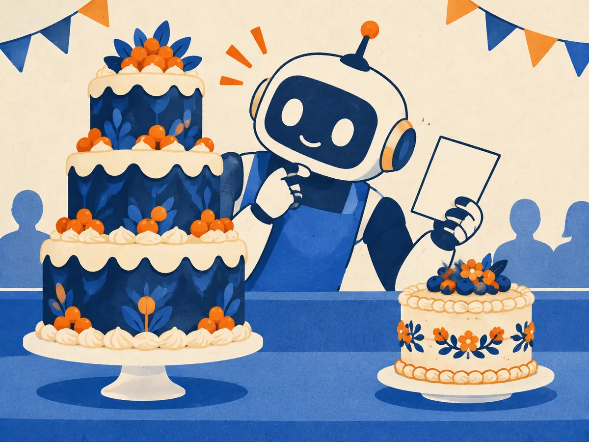

LLM-as-judge
How do you score a summary, an email or a chat answer when there's no single right answer to match? Increasingly, you ask another model. LLM judges are fast and cheap, and they agree with people surprisingly often. They also have predictable biases. This lesson covers both, and how to measure whether your judge can be trusted.
By the end you can
- Set up pairwise and single-answer (rubric) judging, and say when to use each.
- Name the main judge biases (position, verbosity, self-preference) and a mitigation for each.
- Measure judge–human agreement with Cohen's kappa, and explain why raw agreement misleads.
Take your best guess. Being wrong now helps the right answer stick later.
You ask an LLM judge “Which answer is better, the first or the second?”, then ask again with the two answers swapped. It picks whichever answer comes first, both times. This is…
- Fine: it's being consistent
- Position bias: the verdict depends on order, not quality
- Verbosity bias
- A sign the answers are identical
A judge and a human labeller agree on 90% of items. Is the judge reliable?
- Yes, 90% is excellent
- No, anything below 99% is useless
- Not necessarily: if both say “good” about 95% of the time, they'd agree about 90% of the time by pure chance
- Only if the judge is a larger model than the one being judged
Why use a model as the judge?
Benchmarks (M4.2) work when answers can be checked: a letter, a number, unit tests. Most real outputs can't be checked that way. There are many good summaries of an article and many good replies to an email. Human raters handle this well but are slow and expensive, and you want to evaluate every prompt change.
So you give a strong model the question, the output(s) and instructions, and ask for a verdict. Zheng et al. (2023), “Judging LLM-as-a-Judge with MT-Bench and Chatbot Arena”, found that GPT-4 as a judge agreed with human preferences over 80% of the time, about as often as humans agreed with each other in their study. Their MT-Bench, and later judge-based benchmarks such as AlpacaEval and Arena-Hard, are built on this idea.
Two set-ups
- Pairwise: show the question with answers A and B, and ask which is better (or a tie). Comparing is easier and more consistent than absolute scoring, and it's the natural fit for “is the new model better than the old one?”. Its weak spots are order effects and needing a pair for every comparison.
- Single-answer grading: show one answer plus a rubric, e.g. “1–10”, or better, pass/fail on concrete criteria such as “cites the source”, “under 100 words”, “no invented numbers”. It scales to any number of models and gives absolute scores you can track over time, but scores can drift between judge versions and tend to bunch up in a narrow range.
- Reference-guided (either set-up): also give the judge a correct reference answer. This matters for maths and facts, where judges can be fooled by a confident wrong answer; Zheng et al. found it markedly reduced grading errors on maths questions.
Known biases
Zheng et al. documented three biases that later work has confirmed in many judges:
- Position bias: favouring the answer in a particular slot, often the first. In their tests, even GPT-4 gave the same verdict after a swap in only about two-thirds of cases.
- Verbosity (length) bias: preferring longer answers even when the extra words add nothing. They padded answers with rephrased repeats of their own points; weaker judges were fooled most of the time, while GPT-4 was much more robust but not immune.
- Self-preference: favouring answers written by itself or its own model family. They saw signs of it, with limited data; Panickssery et al. (2024) later linked self-preference to models recognising their own writing.
Judges also struggle to grade problems they can't solve themselves, and they can be swayed by a confident tone or by instructions hidden inside the answer being graded.
Explain like I'm 5

A robot is judging a baking contest. It keeps leaning toward the biggest cake, even though the small one next to it was made much more carefully and tastes better. Bigger isn't better, but the robot is easily impressed by size.
Two fixes. Give the robot a score card that says what counts: taste, texture, decoration, not size. Then let some people taste the cakes too, and check how often the robot agrees with them before you trust it on its own.
Where it breaks: a real judge's biases are subtler than “big cake wins”, and simply telling a model to ignore length doesn't reliably remove the bias. That's why you measure it.
Mitigations
- Position: judge every pair in both orders. Count a win only when the verdicts agree, otherwise a tie, or average the two scores. It doubles the cost and removes the order effect from your totals.
- Length: tell the judge in the rubric that padding is not a virtue, compare answers of similar length, and check how win rate varies with length. AlpacaEval 2.0 added a length-controlled win rate that statistically removes the length effect (Dubois et al., 2024).
- Self-preference: don't let a model judge its own outputs when it's a contestant. Use a judge from another family, or a panel of different judges (Verga et al., 2024, “Replacing Judges with Juries”).
- Vagueness: use specific rubrics, ask for a short justification before the verdict, use structured output, and provide reference answers where they exist.
- Calibration: label 100–200 examples yourself, measure how well the judge agrees with you, and iterate on the judge prompt until agreement approaches human–human agreement. Re-check whenever you change the judge model or prompt.
Measuring agreement: Cohen's kappa
Raw agreement, the fraction of items where judge and human give the same label, is misleading when one label dominates. Cohen's kappa (Cohen, 1960) corrects for agreement that would happen by chance:
$$\kappa = \frac{p_o - p_e}{1 - p_e}$$$p_o$ is the observed agreement. $p_e$ is the agreement you'd expect if the two raters labelled independently at their own rates: for each label, multiply the two raters' rates for it, then add these up. $\kappa = 1$ is perfect agreement, $0$ is chance level, and below 0 is worse than chance. A common rough guide (Landis & Koch, 1977) calls 0.21–0.40 “fair”, 0.41–0.60 “moderate” and 0.61–0.80 “substantial”, but treat these labels as conventions rather than rules.
Worked example
100 answers, each labelled good or bad by the judge and by a human: both say good for 40; judge good, human bad for 20; judge bad, human good for 10; both bad for 30.
- Observed agreement: $p_o = (40 + 30)/100 = 0.70$.
- Label rates: judge says good $60/100 = 0.6$; human says good $50/100 = 0.5$.
- Chance agreement: $p_e = 0.6 \times 0.5 + 0.4 \times 0.5 = 0.50$.
- $\kappa = (0.70 - 0.50)/(1 - 0.50) = 0.40$. 70% agreement sounded fine; kappa says “fair” at best.
The trap is worse with lopsided labels. If both raters say “good” 90% of the time and agree on 85% of items, $p_e = 0.9^2 + 0.1^2 = 0.82$ and $\kappa = (0.85 - 0.82)/0.18 \approx 0.17$.
Another 100 items: both good 50; judge good, human bad 15; judge bad, human good 5; both bad 30.
- Observed agreement $p_o =$
- Chance agreement $p_e =$
- $\kappa =$
You want to use an LLM judge to compare two chatbot versions. Describe how you'd set it up so its verdicts can be trusted.
Under the swap-and-check rule, the judge picks A when the order is (A, B) and B when the order is (B, A). What do you record?
- A wins, because it was judged first
- B wins, because it was judged last
- A tie: the verdicts disagree, so the judge has no real preference
- Discard the question from the benchmark
A lazy judge labels every answer “pass”. Humans label 80% of answers “pass”. What are the raw agreement and Cohen's kappa?
- 80% agreement, $\kappa = 0$
- 80% agreement, $\kappa = 0.8$
- 100% agreement, $\kappa = 1$
- 20% agreement, $\kappa < 0$
An LLM judge with a length bias is used as the reward in RL fine-tuning (as in RLAIF, M3.6). What is the likely result?
- Nothing; RL removes judge biases automatically
- Answers become shorter
- The judge becomes unbiased over time
- The policy learns to write longer answers to win reward, without becoming better: a form of reward hacking
Which pairing of bias and mitigation is correct?
- Self-preference: run each pair in both orders
- Self-preference: use a judge from a different model family, or a panel of judges
- Position bias: use a length-controlled win rate
- Verbosity bias: give the judge a reference answer and nothing else
Key takeaways
- LLM judges grade open-ended outputs cheaply; strong judges can approach human–human agreement (Zheng et al., 2023).
- Pairwise for comparing systems; rubric scoring for absolute tracking; add references for maths and facts.
- Watch for position, verbosity and self-preference bias: swap orders, control length, and use a judge that isn't a contestant.
- Validate the judge against human labels with Cohen's kappa $= (p_o - p_e)/(1 - p_e)$, not raw agreement.
Simulate a position-biased judge, watch swap-and-average fix its win rates, and implement Cohen's kappa. About 15 minutes, NumPy only.
Add this lesson's cards to your spaced-review deck.